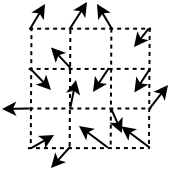
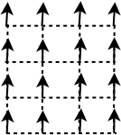
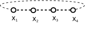
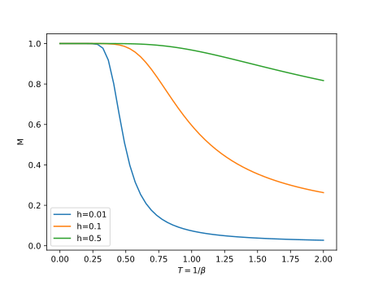
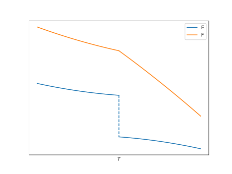
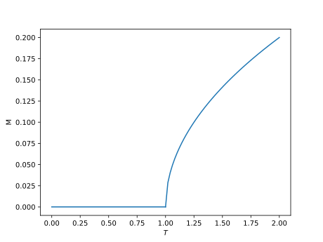
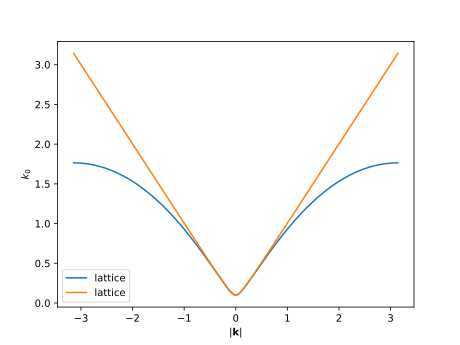

Lattice Field Theories¶
Motivation¶
These lecture notes give an introduction to lattice field theory, a powerful framework for solving quantum field theories from first principles. We approach the topic mainly from the point of view of QCD, going through the building blocks necessary to simulate a model with fermions with a gauge interaction.
Learning Objectives¶
The course has two main objectives: to learn enough about lattice methods to put them into practical use and to become familiar with common methods used in studies of Standard Model physics.
After successfully completing the course, the student
can implement a Monte Carlo simulation of a quantum field theory in discrete space
can analyse the output of the calculation and describe its connection to the theory
recognizes the most common discrete representations of field theories and is able to find information on them
recognizes observables in the discrete representations and is able to find information on them
can apply perturbation theory in a discrete space
Spin models¶
We start with spin models as a simple example of a lattice model and to get started with programming exercises. This lesson introduces fundamental lattice simulation methods as well as important concepts from thermodynamics.
Spin models describe, in a rather simplified way, how a ferromagnet works. We think of a clump of iron as a bunch of “atoms” sitting unmoving on a structured lattice.
Each atom has a spin, which creates a small magnetic field. When the spins point to different random directions (as above), they cancel each other and the iron is not magnetized. But if for some reason they point to the same direction, the small magnetic fields add up into a macroscopic value.
Why would this happen?
A spin pointing against a magnetic field has a slightly higher energy than a spin pointing to the same direction as the field. So atoms close to each other would prefer to align. At zero temperature, they would eventually all point to the same direction and create a magnet. At higher temperatures, thermal fluctuations will occasionally cause a spin to flip.
Let’s only consider the spins closest to each other (nearest neighbors.) The energy of two spins is
and the energy of the whole system is
The sum over \(<ij>\) here counts pairs of neighbors. If the spins are coupled to a magnetic field \(\mathbf{H}\), with the magnetic momentum \(\gamma\), the energy is
At small temperatures the energy will tend to a minimum and the spins will align. If there is a magnetic field, they will align to the direction of the field. Otherwise they will pick a random direction.
At a non-zero temperature \(T\) the configurations of spins will follow the Boltzmann distribution,
The thermal expectation value of an observable \(O\) is then
At high temperatures the spins become essentially random and the magnetization disappears.
The Ising Model¶
The Ising model is a further simplification of the above. All the spins are either \(+1\) or \(-1\). The partition function then is
Here we use dimensionless couplings, \(\beta=\frac{J}{kT}\) and \(h=\frac{\gamma H}{kT}\).
The Ising model has been solved in 1 and 2 dimensions (Onsager 1944, Yang 1952).
Simulation Algorithms
The integral in the partition function has a very high dimension and cannot practically be performed directly. We introduce the Heat Bath algorithm here and will cover other Monte Carlo methods in later chapters. Monte Carlo methods perform very well when calculating high dimensional integrals.
In the Ising model, the integral reduces to a sum over all possible configurations of the spins. At constant temperature (in a heat bath), the probability of finding the model in a given state should be equal to the Boltzmann weight.
We use a model known as a Markov Chain to draw configurations from this distribution. Starting from any given configuration \(s_0\), we build a new configuration \(s_1\) and accept it with an appropriate probability \(W_f(s_0 \to s_1)\). The probability needs to be chosen correctly so that we do not move out of the Boltzmann distribution.
The update probability needs to satisfy two conditions:
1. Detailed Balance
If the first configuration is drawn with the correct probability, so will be the second one. Detailed balance is in fact a bit more stringent a requirement than is necessary, but it’s usually easiest to implement an algorithm that satisfies it.
2. Ergodicity
It must be possible to reach any possible configuration from any other possible configuration in a finite number of updates. Otherwise we might get stuck in a finite region of the space of configurations.
With these two conditions, as long as the original configuration is drawn from the correct distribution, the next one will also be. And since all configurations have a non-zero weight, we can actually start from any configuration.
But how do we construct the update? The Ising model has been studied for a long time and there are many options. One option is to update one spin at a time, flipping each spin with the appropriate probability to satisfy detailed balance. Here are two common options for the probability a spin:
1. Heat Bath Algorithm:
In the heat bath method, we choose a random new spin based on its Boltzmann weight normalized by the sum of all choices (in the Ising model just \(\pm 1\)). The probability of choosing a new state \(s_1\) from possible states \(s\) is
Notice that the probability does not depend on the previous state \(s_0\). So the probability of choosing a positive spin is
and for a negative spin
2. Metropolis Algorithm (Metropolis-Hastings Algorithm):
In the Metropolis method we suggest a random change to the current state of the model. Given the initial state \(s_0\) the probability of choosing the new state \(s_1\) is
So in the Metropolis method the probability of changing the spin depends on the initial state. If the energy decreases, the update is always accepted. If it increases, the probability is the ratio of Boltzmann weights of the two options. You can check that the update follows detailed balance in both cases.
Note that if there were more than one possible spin, we would need to choose between them using some update probability. This probability would need to be chosen so that detailed balance is still preserved. More on this later, when we update models with continuous parameters.
Example
Let’s implement the Ising model. This is in python, but it’s hopefully readable if you know another language. The algorithm is the important part. I recommend that you write the code yourself, and don’t just copy and paste.
First will need numpy
import numpy as np
Next set up some parameters
lattice_size = 16
temperature = 4.0
number_of_updates = 1000
Create a numpy array that contains a spin on each lattice site
spin = np.ones([lattice_size,lattice_size], dtype=int)
and run updates in a loop, updating one random site at a time
for i in range(number_of_updates):
x = int( lattice_size*np.random.random() )
y = int( lattice_size*np.random.random() )
Now we will randomly change the spin so that the probability matches the Boltzmann distribution. First calculate the probability weights of each state
energy_plus = -(1) * ( spin[x][(y+1)%lattice_size] + spin[x][y-1]
+ spin[(x+1)%lattice_size][y] + spin[x-1][y] )
energy_minus = -(-1) * ( spin[x][(y+1)%lattice_size] + spin[x][y-1]
+ spin[(x+1)%lattice_size][y] + spin[x-1][y] )
P_plus = np.exp( -energy_plus/temperature )
P_minus = np.exp( -energy_minus/temperature )
Notice the module lattice size (%lattice_size) in the neighbor index. If the current site is at the lattice boundary, this will point to the other side. We don’t need this in the negative direction since python does it automatically.
Now calculate the heat bath probability of choosing positive spin and we choose the spin according to this probability
probability_plus = P_plus / (P_plus + P_minus)
if np.random.random() < probability_plus:
spin[x][y] = 1
else:
spin[x][y] = -1
This works in principle, but the program is a bit boring since it doesn’t measure anything. Let’s print out the energy after each update.
energy = 0
for x in range(lattice_size):
for y in range(lattice_size):
energy += - spin[x][y] * spin[x][(y+1)%lattice_size]
energy += - spin[x][y] * spin[(x+1)%lattice_size][y]
print("The energy is {}".format(energy))
Exercise
Measure the magnetization as well
Running the measurement between each update is really wasteful. Do multiple updates between measurements.
Switch to the Metropolis Algorithm
Other Spin Models¶
Several more complicated spin models are studied. Some of the simpler ones include
The Potts Model
Similar to the Ising model, but there are \(N\) possible spins. Neighboring spins have lower energy if they are equal.
The XY Spin Model
Each spin is represented by an angle \(\alpha\), or a 2D vector \(s\) of length 1. The distance between spins is represented by the dot product, or equivalently the cosine of the difference of the angles.
O(N) Spin Models
Similarly, spins can be represented by N-dimensional vectors.
Observables¶
We can measure the amount of magnetization through the sum of the spins. For an individual configuration
where V is the number of points on the lattice, the volume. We get the thermal average by integrating over the Boltzmann distribution:
This can also be expressed as a derivative of the partition function with respect to the external field \(h\)
So the field \(h\) functions as a source for the magnetization.
Similarly the energy is
Other interesting observables include - the specific heat (heat capacity)
The magnetic susceptibility
Correlation functions
where \(\xi\) is the correlation length.
Deriving this from the partition function requires introducing an \(\mathbf{x}\)-dependent source \(h_\mathbf{x}\)
Transfer matrices (Example of an exact solution)¶
Consider the 1D Ising model:
and assume periodic boundary conditions
First we’ll write the energy in a symmetric way between the neighboring sites
We’ll define the \(2\times2\) transfer matrix
Now the partition function can be written as
The transfer matrix describes the contribution to the energy between two connected spins, \(s\) and \(s'\).
Writing the matrix explicitly,
We can evaluate the trace by diagonalizing \(T\):
In the thermodynamic limit, \(L\to\infty\),
and
From here we can calculate the magnetization as a function of \(h\)
So at \(h=0\) the magnetization is zero, which is what we expect. At large \(\beta\), small temperature, it approaches one, which is also expected. Here is a sketch of its behavior in general:
Phase transitions¶
Global symmetries
The action
has global symmetries when \(h=0\). There are transformations \(M\) that can be applied to all spins without changing the action. More precisely, \(S(s)\) and \(ds\) remain constant when
Ising:
(37)¶\[s_i\to -s_i\]Potts Model:
(38)¶\[s_i\to (s_i+1)\bmod N_s\](and other permutations)
O(N) Model:
(39)¶\[s_i\to Ms_i,\]where \(M\) is a \(N\times N\) matrix with
(40)¶\[M^T M = I.\]So M is an orthogonal matrix: \(M^{-1} = M^T\). It belongs to the group of \(N\times N\) orthogonal matrices, \(M\in O(N)\)
The interaction term is invariant since
(41)¶\[\begin{split}s_i \cdot s_j = (s_i)_\alpha (s_j)\alpha = \to M_{\alpha,\beta} (s_i)_\beta M_{\beta,\gamma} (s_j)\gamma \\ = s_i M^T M s_j = s_i s_j\end{split}\]If \(h\neq 0\), the symmetry is “broken”:
(42)¶\[h \cdot s_i \to (h)_\alpha M_{\alpha,\beta} (s_i)_\beta \neq h \cdot s_i\]We also need to check the integration measure \(ds\):
(43)¶\[\begin{split}&\int_{|s_i|=1} d^Vs_i = \int d^Vs_i \delta(|s_i|-1)\\ &\to \int d^Vs'_i \delta(|s'_i|-1) = \int d^Vs_i \left \| \frac{ds'}{ds} \right \| \delta(|Ms'_i|-1) \\ &= \int d^Vs_i | \det(M) | \delta(|Ms'_i|-1)\\ &= \int d^Vs_i \delta(|Ms'_i|-1)\end{split}\]So the measure is also invariant, and the model is invariant at \(h\neq 0\).
Symmetry breaking
Consider the model at \(h=0\) and finite \(V\). Since the model has a global \(O(N)\) symmetry, it is symmetric under
However the magnetization
is not symmetric,
Therefore we always have
On a finite lattice the symmetry is restored and the model is in a disordered phase.
If \(h\neq 0\) the symmetry is explicitly broken and \(<M>\neq 0\)
Non-trivial symmetry breaking happens in the thermodynamic limit, \(V\to 0\). The symmetry is spontaneously broken if
The order of the limits is important here. If the limit \(h\to0\) is taken too quickly the magnetization will approach \(0\).
The 1D Ising model the symmetry is not spontaneously broken.
At \(D>1\) the symmetry is broken at \(T>T_c\), or \(\beta < \beta_c\).
Phase transitions
In many models we have a broken symmetry at \(\beta > \beta_c\) and a restored symmetry at \(\beta < \beta_c\). This means there is a phase transition at \(\beta=\beta_c\)
First order One or more of the first derivatives of the free energy
(50)¶\[F=-\frac{1}{\beta}\log(Z)\]is discontinuous:
(51)¶\[<E> = \frac{\partial}{\partial\beta} \beta F\](52)¶\[<M> = -\frac 1V \frac{\partial}{\partial h} \beta F\]The jump in energy is known as the latent heat
(53)¶\[\frac 1V \Delta E = \lim_{\beta\to_-\beta_c}<E> - \lim_{\beta\to_+\beta_c}<E> = \frac{E_- - E_+}{V}\]How does this work on the lattice? The transition is not instantaneous, but gets smoothed over a small span of temperatures. The derivative of the energy in fact grows with the volume.
(54)¶\[\chi = \frac 1V \left<(E-<E>)^2\right>\]At \(\beta=\beta_c\), \(<E>\approx \frac 12 (E_+ + E_-)\), so
(55)¶\[\chi \approx \frac 1V \frac{\Delta E^2}{4} = V \frac 14 \left( \frac{\Delta E}{V} \right)^2 \sim V\]In a first order transition the two phases can coexist, such as ice and water. The average energy density in this state is between the two phases.
Second order
No discontinuity in the first derivative of the free energy, but there is a discontinuity in the second derivative. This is the case in spin models. The derivative of magnetization
(56)¶\[\frac{\partial}{\partial_h}<M> \neq 0\]is discontinuous.

Critical Phenomena:¶
The correlation length \(\xi\) diverges exponentially at \(\beta_c\). Structures scale to all distances:
Writing \(\tau = \beta-\beta_c\):
The critical exponents are characteristic to the symmetries and dimensionality of the model. This is an important property of higher order transitions known as universality. It allows us to construct lattice models of continuous systems. More on this later.
Potts model in 2D (Including Ising) Has a phase transition at \(\beta=\log(1+\sqrt(q))\). It is second order when \(q\leq 4\) and first order otherwise. This is a discrete symmetry, in 2D continuous symmetries do not break (Mermin-Wagner-Coleman theorem).
O(N) model in 2D No symmetry breaking transition due to Mermin-Wagner-Coleman.
XY model in 2D Has a special Berezinskii–Kosterlitz–Thouless transition, \(\infty\) order with symmetry restored on both sides.
O(N) in 3D Has a 2nd order transition. The critical exponents have been determined numerically.
Potts model in 3D First order when \(q\geq 3\), otherwise second.
O(N) in 4 or more dimensions Second order transition with mean field exponents. These can be calculated analytically.
In the O(N), Ising and Potts models, there is also a first order transition when \(\beta > \beta_c\) \(h\neq 0\), if we change \(h\) continuously across \(0\).
Crossover
Crossover is a term for a transition, where no symmetry is broken and / or there is no discontinuity in the derivative of the free energy. The transition is continuous and there is no well defined critical temperature, but the two phases are nevertheless distinct.
Field theories¶
Quantum Field Theories¶
Quantum field theory is a huge field and introducing it properly is outside the scope of this course. In short, quantum field theory unifies the special theory of relativity and quantum mechanics. This is not an easy task for point particles, but it turns out you the quantum mechanical version of relativistic electromagnetism works. Quantum field theory builds on this observation and uses field theories to describe other particles as well.
Let’s consider a scalar field theory is Minkowsky spacetime (the field \(\phi\) could also represent a more complicated set of fields). Given the action
The classical equations of motion are found by minimizing the action, which leads to the Euler-Lagrange equation
In this case we find the Klein-Gordon equation
The classical Hamiltonian is obtained by a Legendre transformation
where \(\pi = \delta \mathcal L/\delta\dot\phi\) is the canonical momentum, and
In quantum field theory, we consider the Hilbert space of states \(\ket{\phi,\pi}\). These evolve according to the Schrödinger equation
Here the Hamilton operator is
The expectation value of a measurable that depends on the fields \(\phi\) and \(\pi\) is
and
We also define field operators
We can formally solve the Schrödinger equation to find the time evolution operator
In this representation, we can define a partition function analogically to classical statistics,
From here we could derive the Feynman path integral representation by evolving the a field configuration \(\bra{\phi,\pi}\) by small time steps \(\delta t\) and taking the limit \(\delta t\to 0\). Here we will skip the derivation and simply introduce the result. Then we will follow essentially the same steps in field theory at thermal equilibrium.
The Path Integral Representation¶
First, let us quickly introduce the path integral representation in Minkowsky space. We will not derive this, since the derivation is essentially the same in thermal field theory and we will do it there. The expectation value of an observable is
Or using natural units \(\hbar = 1\)
This is similar to the representation of thermodynamics used above. We can write observables using source fields,
There are no state vectors or operators in the path integral representation. Instead, the variables closely resemble classical fields. The difference is the integral over all possible field values, with a weight defined by the action.
Now, since the fields are defined at all space-time locations, the integral measure
is not well defined and needs to be regularized. This is a general problem with functional integrals. Lattice field theory is a conceptually simple renormalization method: we divide the volume into a lattice of discrete points \(x\in aZ^4\) and study a system with a finite volume \(V\). Since the integral is now finite, we can in principle calculate is directly (brute force, with supercomputers,) and get fully non-perturbative results.
The full theory is recovered by taking the infinite volume and continuum limit \(v\to \infty, a\to0\). The order of the limits is important here, just like for the spin models.
In practice the dimensionality of the integral grows quickly when increasing the volume and decreasing the lattice spacing. In most cases the integral can be calculated directly only for lattice sizes that are practically useless.
Instead, we should use Monte Carlo methods. The problem here is the complex, unimodular weight, \(\exp(iS)\). Every configuration \(\{\phi\}\) contributes with the same magnitude and result depends on cancellations between configurations. However, this is (mostly) solved in the imaginary time formalism of thermal field theory.
Imaginary Time Path integral¶
In equilibrium at a finite temperature \(T\), a quantum field theory follows the Gibbs ensemble:
This is formally similar to the real time partition function above, with the replacement
and is equivalent to quantum field theory in Euclidean spacetime. The Hamiltonian and the Hilbert space remain unchanged.
It is convenient to start by discretizing the space. We will do this in any case, since we want to end up with discrete spacetime, but this could be done later.
The Hamiltonian in discrete space is
Now let’s consider the amplitude of the fields \(\phi_A\) and \(\phi_B\) in equilibrium at inverse temperature \(\tau = 1/T\) and split the time interval into N small sections
In order to evaluate this, we insert the identity operators \(1 = \int\left[\Pi_x\right]|\phi_x><\phi_x|\) and \(\int\left[\Pi_x\right]|\pi_x><\pi_x|\).
Since the matrix in each exponential is small, we can expand the first few two and conclude that
and that
where \(\Delta_0 = \frac {1}{a_\tau} \left( \phi_{n+1} - \phi_n \right)\).
Repeating this we can write the entire expression in terms of the field values \(\phi_n\) and \(\pi_n\) in discrete time. Further, the integral over the field \(\pi_n({\bf x})\) is gaussian and after performing that integral we are only left with \(\phi_n\).
Now, after running through the same logic for all other \(n\), we find the path integral
and
In the continuum limit we would have
Finite Temperature¶
So the path integral formulation in thermal equilibrium has the same form as a Euclidean field theory in four dimensions. Further we can now write the partition function as
The quantum statistical model in 3 dimensions corresponds to a classical statistical model in 4 dimensions with periodic boundary conditions.
In summary
Minkowsky |
Euclidean |
\(\mathcal L_M\) |
\(\mathcal L_E = - \mathcal L_M|_{x_i \to ix_0; \partial_0 \to i\partial_0}\) |
\(g = (1,-1,-1,-1)\) |
\(g = (1,1,1,1)\) |
Correlation functions
The correlation functions of a classical theory are related to the Greens functions of the quantum field theory. Earlier we used the “transfer matrix” \(T\),
We can write the partition function using the transfer matrix as
Now diagonalizing the transfer matrix \(T\) and labeling the eigenvalues as \(\lambda_0, \lambda_1,\dots\),
Note that the eigenvalues \(\lambda_i\) are equal to \(exp(E_i)\), where \(E_i\) are the eigenvalues of \(\hat H\). So \(\lambda_0\) corresponds to the lowest energy state, or the vacuum \(|0>\).
The two point function (with \(i>j\)) in the path integral and operator representations is
Introducing a time dependent operator
In the limit \(N_\tau\to\infty\) (and because \(a_\tau(i-j) = \tau_i-\tau_j\)),
Finally, if including also negative time separation \(i-j\), we have
where \(\mathcal T\) is the time ordering operator.
Greens Function and the Mass Spectrum
Any Greens function for an operator \(\Gamma\) can be expanded in terms of energy states (eigenstates of the hamiltonian)
At long enough distances we find
Here the state \(E_0\) is the lowest energy eigenstate that the operator \(\Gamma(0)\) constructs out of the vacuum state and therefore the eigenvalue \(E_0\) is the mass of a state with the same quantum numbers as \(\Gamma(0)\).
This relation allows us to measure the masses of propagating composite states. It is also useful for calculating certain more complicated observables, such as scattering lengths.
Lattice Terminology
We do computation on a lattice with a finite number of points, so a finite volume and finite lattice spacing. In order to obtain results in a continuum model, we need to take two limits in order:
\(V \to \infty\): the thermodynamic limit
\(a \to 0\): the continuum limit
Run simulations at fixed \(a\) and several \(V\). Extrapolate to \(V\to\infty\)
Do the previous with different values of \(a\) and extrapolate to \(a\to 0\)
Often it is also easier to run simulations with unphysical parameters, such as quark mass in QCD and take the limit \(m_q \to m_{q,phys}\)
At \(T=0\)
\(V\to \infty\)
\(N_\tau,N_s\to\infty\), \(a\) constant
continuum: \(a\to 0\)
At \(T>0\)
\(V\to \infty\)
\(N_s\to\infty\), \(a\) constant, \(N_\tau a\) constant
continuum: \(a\to 0\), \(\frac 1T = aN_\tau\) constant
Scalar Fields¶
The action¶
The continuum action of a free scalar field \(\phi\) in Euclidean space is
On a lattice we can define the d’Alembert operator as
so that
where \(\hat\mu\) is a basis vector of length \(a\) and \(x\) and \(y\) are vectors, \(x_\mu = an_\mu\) Using these definitions, we can write the lattice action as
The partition function is Gaussian, \(S=\frac12 \sum_{x,y} \phi_xM_{x,y}\phi_y\), and we can actually do the integral
While this looks like it should reproduce the continuum action when \(a\to 0\), this is actually a subtle issue. In this case things will work out, but once we get to fermions, we will see how this can go wrong. In any case, we should check that our action produces the correct model in continuum.
Scalar Field Theories¶
Most classes in field theories will introduce the \(\phi^4\)-theory:
The Higgs field is a complex scalar field, \(\phi_x\) is a complex number. The partition function, excluding interactions with other standard model fields is
This is similar to the \(\phi^4\)-theory, but the mass term is negative. This leads to a potential well at zero temperature. As a results, the Higgs model has a symmetry breaking transition at a finite temperature.
Updating Scalar Fields¶
Scalar fields are continuous, represented by floating point numbers. The most efficient update method depends on the theory, but the metropolis update gives a very general method:
Choose a random field on a random site
Update the field by adding a random value \(\Delta\). Gaussian distribution usually works well. The parameter C is tunable.
accept or reject the change according to the metropolis probability.
Fourier Transforms¶
The discrete Fourier transform is
On a lattice with finite lattice spacing \(a\), \(x=an\), the momentum is periodic
and we can restrict it to the Brillouin zone, \(-\pi < ak_\mu \leq \pi\)
In infinite volume the inverse transform is
It is often more convenient to use dimensionless units, where \(x_\mu \in Z,\) \(-\pi < k_\mu \neq \pi\).
If the lattice is finite, the inverse transform depends on the boundary conditions. With periodic boundaries, \(x_\mu +aN = x\mu\), the allowed momenta are \(ak_\mu = \frac{2\pi}{N} n_\mu -\pi\), with \(0<n_\mu \leq N\). The inverse transform is a sum over these momenta:
This approaches the integral form when \(N\to \infty\)
Lattice Propagator¶
The scalar field propagator \(G(x,y)\) is the inverse (Greens function) of the operator \(a^{-d}M = (\Box + m^2)\),
Calculating Greens functions is often simplest by taking a Fourier transform:
So the propagator is
where \(\hat k\) is the lattice momentum
In the continuum limit we take \(a\to 0\) and
In this case everything works well. The propagator behaves correctly in the continuum and describes a single particle.
Poles of the Propagator
In Minkowsky spacetime the propagator has a pole at \(k_0^2 = k_ik^i + m^2\) and this defines the dispersion relation of a free particle. In Euclidean time there is no pole since the square in the denominator is always positive.
We can recover the pole structure using a Wick rotation back into Minkowski space: \(k_0^M \to ik_0^E\). This works since the propagator has no poles in the quarter of complex space between \(k_0^E\) and \(k_0^M\).
So
Here is a comparison of the lattice and continuum propagators at \(am=0.1\)
N-point Functions
The Greens functions can be generated using a source \(J\)
with
This defines N-point functions
Monte Carlo Methods¶
Now let’s take a brief look at Markov Chain Monte Carlo algorithms. We already used these in the Ising model example, but we need to go over a bit more detail in order to analyze our results properly.
Dartboard Example
The dartboard example clarifies the general idea of the Monte Carlo method. Monte Carlo is a general method for numerically evaluating an integral. Say we need to calculate the area of a circle with unit radius. The area is
But assume we don’t know this, but we do know the area of a square. We can evaluate the are of any shape within the square by randomly throwing darts into the square. The probability of a dart landing in the circle is
This method can be used to evaluate the area of any irregular shape as long as we can determine whether the dart has landed inside it.
Monte Carlo integration¶
Now let’s take a look at a 1D integral
We could take this to describe a shape inside a square and draw random values on both x and y axis. We would need to evaluate the function at x to determine whether \(y<f(x)\).
In the 1D case this this is not the most efficient method, but for large dimensional integrals the error of this method scales favorably. The other standard method for numerical integration is to split the domain into equal pieces and sum them up, following a simple rule for each piece. For example, if following the trapezoidal rule, the error scales as
In error of the Monte Carlo method is statistical and it follows from the central limit theorem that
We will not prove this here, but you can check it by calculating the standard deviation in your own simulations.
Exercise
Run a simulation of the Ising model and print out a large number of measurements. Take the first 100, 200, 500 and 1000 measurements and check this follows the inverse square root scaling.
So the Monte Carlo method becomes more efficient around \(D = 8\). In a model with a single scalar field each site has a single spin, so for a small \(4\times4\times4\times4\) lattice we already have
This result is true as long as the function and its square are integrable
This is true in lattice simulations, but here is a counterexample:
The mean and standard deviation from a Monte Carlo run are still correct, but the error may not scale as inverse square root.
Importance Sampling¶
The Monte Carlo Method can be made even more efficient using importance sampling. Again, we already do this in our example program. We integrate
The weight function of the Gibbs ensemble is exponentially peaked where S is small. Further, \(S\) is an extensive quantity, meaning it grows with the volume. The function gets more peaked as the volume increases. If we use completely random points in the Monte Carlo estimate, most of the values will be very small and only a small fraction will actually contribute to the integral.
Instead we should choose the random points from a distribution and mimics the function we are integrating. This leads to more measurements actually contributing to the result and reduces the variance.
Say we are integrating
We choose to draw random numbers from the distribution \(p(x)\). The integral is
If \(p\) is chosen well, the function \(p/f\) will be flatter than the original and the variance of the result will be smaller. The optimal choice would be to use \(p(x) = C |f(x)|\).
Of course if it was that straightforward, we would always just draw from the f(x). The problem is that f(x) is probably not a distribution, and to turn it into one, we would need to calculate
which is exactly the problem we are trying to solve.
In lattice simulations though, this is exactly what we do. We are actually calculating
If we normalize the two integrals in the same way, the normalization drops out.
Since the denominator does not depend on \(O\), the best choice generally is
with an unknown normalization coefficient \(C\). We then find
Notice that since the normalization coefficient drops out in the Monte Carlo, we cannot calculate the partition function directly from the simulation.
Autocorrelation Time¶
The autocorrelation time measures the number of update steps required to reach an independent configuration.
Given a measurement \(X\), let’s label the individual measurements as \(X_i\) with the configuration numbers \(i=1,2,...,N\). The autocorrelation function for measurable \(X\) is the correlation between measurements separated by time \(t\) normalized by the overall variation:
This is normalized to \(C(0)=1\).
When the number of measurements is large, \(N\to \infty\), and the time \(t\) is not small (\(t\to\infty\), \(t\ll N\)), the autocorrelation function decays exponentially
The exponential autocorrelation time \(\tau_{exp}\) is generally roughly the same for all measurements and really measures the time it takes to decorrelate the configurations. For error analysis the relevant quantity is the integrated autocorrelation time
Note that if the autocorrelation function is purely exponential, \(C(t) = e^{-t/\tau_{exp}}\), the two autocorrelation times are the same, \(\tau_{int}\sim\tau_{exp}\). Generally \(\tau_{int} < \tau_{exp}\).
In a Monte Carlo simulation, the corrected error estimate is
In practice \(N\) is always finite. Taking this into account, the formula for the autocorrelation function is modified slightly:
It is important to keep track of autocorrelation times and to use them in error estimates. Calculating observables too often is a waste of time, so if the autocorrelation time is large, it might be worth adjusting the number of updates between measurements.
Hint
Check out jackknife blocking for a second possible error analysis method. It is useful when doing complicated calculations with expectation values and tracking errors becomes unreliable. It also works well with correlated data.
Update Sweeps¶
In our previous example we update the sites in random order. It is often better, in terms of the autocorrelation time, to update each spin in order.
Here are three common choices for update ordering:
Typewriter: Just start site zero, update every site in a row in order and then continue to the next row. Simple to implement, but has a significant drawback: it breaks detailed balance in the Ising model, at least in 1D.
Checkerboard: When all interactions are nearest neighbor, it is possible to update all even sites (\(\sum_i x_i\) is even) or all odd sites without problems with detailed balance. So for a full update run over even sites first and odd sites second.
Random ordering: Just pick sites completely at random. This always respects detailed balance, but might leave a region unchanged for a long time.
Cluster and Worm Algorithm¶
Local updates are not the only option. The most efficient method for simulating the Ising model is a cluster algorithm. The Wolff cluster update [U. Wolff, PRL 62 (1989) 361] proceeds as follows:
Choose a random site i.
Check each neighboring site j. If \(s_j==s_i\), join the site to the cluster with probability \(p=1-e^{-2\beta}\).
Repeat step 2 for each site \(j\) that was joined to the cluster. Continue until there are no more sites to consider.
Flip all spins in the cluster.
Cluster updates perform an update on a large region at once. This way it can quickly go from a state where most spins are \(+1\) to a state where most spins are \(-1\). Doing this in multiple small steps is harder because each step can get reversed.
Worm updates are similar, but they update the configuration as they go. They usually start by creating two mutually cancelling deformations (head and tail). The head moves around the lattice while updating the configuration. When the deformations meet, they cancel and the worm update ends. Worm algorithms can be efficient in a large \(\beta\) expansion, for example.
As a further generalization of the worm algorithm, it is possible to create impossible configurations that, configuration with extra fields or zero weight, as intermediate steps in an update. As long as the final result is not impossible, the update works.
Gauge fields¶
Gauge field theories are fundamental to the Standard Model of particle physics. They describe the three fundamental interactions, strong and weak nuclear forces and electromagnetism. In this section we will see how they can be implemented on the lattice and study some of their properties.
Ising Gauge Model¶
The defining feature of a gauge field is the gauge symmetry, a local symmetry of the action. Let’s look at the following action for spins \(s = \pm 1\)
The kinetic term consists of a product of spins around a single lattice square, also known as a plaquette.
The action is symmetric with respect to the transformation
Now let’s look at a scalar field
This model has a global symmetry,
We turn this into a local symmetry by adding the Ising Gauge field and multiplying with it in the derivative term.
The local symmetry is
We also need to check the measure. Here \(ds \to ds |ds'/ds| = ds |-1| = ds\) and similarly \(d\phi \to d\phi\).
Quantum Electrodynamics¶
Consider a complex scalar field,
This model has a \(U(1)\) global symmetry,
As above, this can be turned into a local symmetry by adding a gauge field
Note the factor \(a\) in the exponential. The field \(A\) can be identified with the vector potential and should have the units of energy.
We add a plaquette term to the Lagrangian and add the field \(U_\mu\) to the derivative term:
The local symmetry is
The plaquette action
This model has the correct symmetries for a scalar field interacting with the electromagnetic field and it was constructed with the same principle. Still, we should check that the plaquette actions reproduces the familiar continuum gauge action.
First, what is the field \(U_{x,\mu}\)? The product \(\phi^*_xU_{x,\mu}\phi_{x+\mu}\) is invariant, it does not change with the local transformation. Therefore we can identify it with the parallel transport. This also works for longer chains, for example,
is invariant.
In continuum the parallel transport is the line integral
where \(A_\mu\) is the vector potential, the integral runs along a contour from \(x\) to \(y\) and \(dr\) is the line element along this contour.
In our discrete setup, the gauge field is constant on the links between sites, and the parallel transport between \(x\) and \(x+\hat\mu\) is
Closed loops of the gauge field are also invariant. In fact, these can be seen as the parallel transport of a massless fermion,
One way of deriving the field strength tensor is to do a parallel transport over a closed loop and take the limit where the loop contracts to a point. This is what we will do here. The plaquette is the smallest closed loop possible on the lattice and we will in the end take the limit \(a\to0\), where the loop contracts to zero.
More formally, we can write
Now expanding
we find
While constant shifts in the action do not actually make a difference, it is common to use the action
This is the Wilson plaquette gauge action [K. Wilson, 1974] for a U(1) gauge theory, such as electromagnetism.
The continuum action you may have seen does not have the factor \(\beta\). This is where the coupling comes in: we would usually write the covariant derivative as
This would lead to the parallel transport
So the vector potential is scaled by a factor of \(g\). On the lattice it is more straightforward to not incorporate the coupling to the matrix, but if we did the rescaling, \(A_\mu \to gA_\mu\), we would find
From here we can set \(\beta=\frac {1}{g^2}\) to recover the continuum action.
So the action matches the continuum action for gauge fields. The propagators can be derived similarly to the scalar fields. The kinetic terms are squared derivatives and will produce the same dispersion relation.
In the Standard Model, the electromagnetic field interacts with fermion and the Higgs field. We will get to fermions after we the gauge field section. The Higgs field also interacts with the weak gauge field and is not just a complex field. Next we will look at \(SU(2)\) interactions, such as the weak interaction, and \(SU(3)\) interactions, such as the strong interaction. The results for \(SU(3)\) generalize to any \(SU(N)\).
The electromagnetic interaction has a further complication not shared by the other fundamental interactions. The electromagnetic couplings for each particle can be different. Modeling this on the lattice would require actually adding the coupling to the parallel transport. For particle \(i\),
In this case it is actually simpler to use store the vector potential \(A_{x_\mu}\) instead of the parallel transport \(U_{x_\mu}\). The parallel transport can be calculated relatively easily,
The exponentiation is not as straightforward in \(SU(N)\).
Non-Abelian Gauge Fields¶
The U(1) gauge field is Abelian, meaning that
The weak and strong nuclear forces are governed by a non-Abelian symmetry. Again, starting from a scalar matter field \(\phi_x\), but this is now a vector with \(N\) indexes,
the global symmetry is
This in principle incorporates the U(1) symmetry, which is still a global symmetry. It can be separated and have a different coupling, so we consider it a separate interaction. This is achieved by requiring
Thus the matrix \(\Lambda\) is a member of the \(SU(N)\) symmetry group.
The symmetry is made local using a gauge matrix \(U_{x,\mu}\) as above. The gauge invariant action is
The gauge matrix is a special unitary matrix,
and it can be written as
The color vector potential \(A_{x,\mu}\) is a traceless, hermitean matrix, and it is a member of a Lie algebra. The continuum action has the same form as in the U(1) case (equation (159)),
Exercise
1. Check that the plaquette action generates the correct continuum action. Note that it this case \(\left[ A_{x,\mu}, A_{y,\nu} \right] \neq 0\) and that the definition of \(F_{\mu,\nu}\) is a bit different.
Note on Gauge Fixing
Unlike in perturbative calculations, there is no reason to fix the gauge during a lattice simulation. In general this is something we do not want to do. The gauge symmetry simply adds an irrelevant dimension to the integral and reduces to a constant factor in the metric.
Updating Gauge Fields¶
The action of the gauge field is still local and in fact each of the directional fields \(U_\mu\), there are only nearest neighbor interactions. The complication is that we need to suggest a new matrix in the correct group. For U(1), there are two options. Either draw the vector potential and exponentiate it, or draw either the real or imaginary part and calculate the other one. It is somewhat easier to use first option:
Loop over direction \(\mu\).
Choose a site \(x\).
Do a metropolis step:
Calculate the sum of “staples”,
(174)¶\[S_{x,\mu} = \sum_{\nu\neq\mu} U_{x+\mu,\nu} U^*_{x+\nu, \mu} U^*_{x,\nu}\]
Calculate the initial action
(175)¶\[S_1 = Re U_{x,\mu} S_{x,\mu}\]Suggest the change
(176)¶\[\begin{split}A'_{x,\mu} &= \left . A_{x,\mu} + C x \right |_{mod(2\pi)},\\ U_{x,\mu} &= e^{iA_{x,\mu}} = \cos(A_{x,\mu}) + i \sin(A_{x,\mu})\end{split}\](Here \(a=1\))
Accept with the propability
(177)¶\[W_f(\phi_x \to \phi'_x) = min\left( 1, e^{- [ S(\phi'_x) - S(\phi_x) ]} \right )\]
If you are also simulating a scalar matter field, you need to derivative term in the action, since it depends on the gauge fields. This can be done by adding \(-\phi^*_x\phi_{x+\mu}-\phi^*_{x+\mu}\phi_x\) to the staple.
For non-Abelian fields, the vector potential is a matrix and exponentiating it is a bit more complicated. One general option is to generate a “small” SU(N) matrix and multiply with it, since this will produce an SU(N) matrix:
Here \(\lambda_i\) is the generator matrix and \(\tau_N = \lambda_i^2\) is a constant that depends on how the generators are defined. For SU(2) with Pauli matrices \(\tau_N = 1\) and for SU(3) with Gell-Mann \(\tau_N = \frac23\).
While there are more efficient algorithms for each SU(N) group, this is a general method and sufficient for our purposes.
During a simulation floating point errors will cause the gauge field to drift outside the SU(N) group. In a long run this needs to be corrected for. The usual method is to change one of the columns and the rows to make sure that the new matrix is Hermitean and has determinant \(1\).
Observables¶
Any observables constructed out of gauge dependent objects should be gauge invariant. The gauge symmetry forces the expectation value of any non-invariant objects to zero (Elitzur’s theorem). For example, \(\ev{U_{x,\mu}} = 0\)
Wilson Loops
Consider static (infinitely massive) charge and a similar anticharge separated by the distance \(R\) that exist for the time \(T\) and annihilate. To describe this we would need to parallel transport a matter field \(\phi\) from a point \(x\) to \(x+(T,0)\), then to \(x+(T,R)\), down in time (as an antiparticle) to \(x+(0,R)\) and finally back to \(x\) to annihilate. This can be described by the operator
This is known as a Wilson loop. Since it is a closed loop, it is a gauge invariant observable. It has several possible interpretations, but perhaps the most straightforward is as the propagator of a state of two static charged particles. At large \(T\) this should behave exponentially,
and indeed it generally does.
The Wilson loops allows us to probe wether a gauge theory is confining. In a confining model, the potential energy \(V(R)\) grows to infinity with distance, whereas without confinement it remains finite.
- The Wilson loop follows the
perimeter law: Free charges.
\(W_{RT} \sim exp(-m (2R+2T))\), where m is the mass of the charge due to the gauge field. At constant \(R\) and large \(T\), \(W_{RT} \sim exp(-2m T)\) and \(V(R) = m\)
area law: Confined charges
\(W_{RT} \sim exp(-\sigma RT)\), \(V(R) = \sigma R\). String tension \(\sigma\) ties the charges together.
Note that because of the exponential decay of the Wilson loop, measuring it becomes difficult when \(R\) and \(T\) are large. The statistical uncertainty remains roughly constant and exponentially more data is required.
In general, the Wilson loop follows the phenomenological form
Polyakov Line
Now let’s add a single static test charge. It does not annihilate,but moves forward in time around the lattice. Since the lattice is periodic, this forms a closed loop:
Similarly to the above, the this corresponds to a propagator and scales exponentially,
Here \(F_Q\) is the free energy of a single charged quark. In a confining model charged quarks cannot appear alone and \(F_Q\to\infty\). So we should find \(\ev{P}\to 0\).
Both \(SU(2)\) and \(SU(3)\) have a deconfining transition and are not confining at high temperatures. Above some critical temperature we find \(\ev{P} \neq 0\). The same result can of course be found using Wilson loops, but the Polyakov line provides a particularly straightforward method.
The transition is in fact related to spin models in an interesting way. SU(N) fields have an coincidental center symmetry. Center elements are elements of a group that commute with other elements. For SU(2) these are \(1\) and \(-1\) and for SU(3) they are \(1\), \(exp(i2\pi/3)\) and \(exp(i4\pi/3)\). Since they commute with all other elements, we can multiply all links at a given \(t\) with a center element and not affect the plaquette action:
Now
However the Polyakov loop does not remain invariant. In only contains one link for each \(t\)-layer, so
Since all configurations that differ by a center trasnformation have the same weight, the expectation value is
The center symmetry transformations are similar to the symmetries of an \(Z_N\) spin model in 3 dimensions. The \(Z_3\) part of the interaction in nearest neighbor and symmetry transformation cycles through the possible spins.
The most notable similarity is that the symmetry is never broken at finite volume. The deconfinement transition requires large enough volume to prevent tunneling between the sectors.
Any matter field breaks the center symmetry and prevents this mechanism for confinement. This is because dynamical particles can break the string: a particle-antiparticle loops can pop out of the vacuum and screen the charges. Confinement is still happening but the Wilson loop does not measure the correct thing.
Fermions¶
The Standard Model of particle physics consists of fermions, gauge bosons and the Higgs field, which is a scalar boson field. What we call matter is generally made up of fermions, although it’s mass in fact arises from the binding energy of the neutral bound states of the strong interaction.
Properly modeling fermions is essential for the complex phenomenology of strong interactions, but fermions are also conceptually more complicated than bosonic fields and present some unique challenges for lattice discretization.
In this section we will review the properties and the path integral describtion of fermions, describe the most important complications created by simulating fermionic theories on the lattice and the most common solutions. The intention is that you become familiar with two of the most common fermion discretizations and are able to look up the details. We will also discuss important measurements constructed from the fermion fields.
The problem with naive Fermions¶
Continuum Fermions
As mentioned above, we run into problems when discretizing fermions. First let’s just see what happens when we try to do this the most straightforward way. The action of a free fermion field is
The fields \(\psi\) and \(\bar\psi\) consist of Grassmann numbers. The defining so feature of Grassmann numbers is that for any two of them, say \(\psi\) and \(\bar\psi\),
From this we find
for any analytic function f.
The matrices \(\gamma_\mu\) are a set of Hermitean matrices that follow the anticommutation relation
In 4 dimensions they are \(4\times 4\) matrices. The fields \(\psi\) are actually length 4 vectors in the same vector space. Since we are using the Euclidean metric, the gamma matrices may be different from the ones you are used to. We could derive them from the Minkowsky space gamma matrices by
A common choice is to use
and
The Dirac equation in a kind of a square root of the Schrödinger equation in the sense that
It applies to a particle transforming in the spin \(1/2\) representation of the Lorentz group.
From the point of view of discretization, however, the significant property is that there is only one derivative. This will cause us some trouble.
Naive discretization
In the previous sections we have introduced the discrete derivatives
Plugging either the forward or the backward derivative in directly would not work, since the resulting action would not be reflection invariant. This would lead to unitarity violations, making the theory truly problematic. And since the symmetries would be different, even in continuum, the continuum limit would not be correct.
Instead, we can take the symmetric combination of the two,
This is reflection invariant, preserves unitarity and approaches the derivative in the continuum limit. It is not enough, though. Looking at the form above, perhaps you can already see the problem we will run into.
With this derivative, the action is
As before, we should first check that this produces the correct set of particles in the continuum. For this we need the propagator.
Deriving the propagator is quite similar to the bosonic case, but since the fields are Grassmann numbers we need to do a bit of Grassmann algebra. First, we define the derivative operator as similarly to standard numbers as possible:
where \(\psi\) and \(\bar\psi\) are Grassman numbers and \(c\) is a complex number.
The integral is defined identically,
While this may seem a bit unusual, the Grassmann integral follows the most important standard properties of an integral. It is a linear operation, an integral over a total derivative vanishes and After an integral over \(\psi\) the expression no longer depends on \(\psi\).
Now the generating function for propagators and other N-point functions is
where the sources \(\eta\) and \(\bar\eta\) are Grassmann fields. Note that the exponential of a Grassmann number is (from the Taylor expansion)
and so
In general
By filling in the squares and performing a change of integration variable, we find
where the fermion matrix \(M\) is
and
From here we can read the momentum space propagator,
It clearly approaches the continuum propagator as \(a\to0\). The lattice momentum is \(\tilde p_\mu = sin(ap_\mu)/a\). For bosons we had \(\hat p_\mu = \frac 2a sin(\frac a2 p_\mu)\).
The difference is quite significant. Remember that the lattice momenta cover the Brillouin zone
Unlike the bosonic momentum, fermion lattice momentum repeats values inside the Brillouin zone
So for each low-momentum mode with a small \(p_\mu\) there is a second low-momentum mode at \(p_\mu+\frac \pi 2 \hat\mu\). In total there are \(2^D = 16\) low-momentum states. These states are known as fermion doublers.
In the continuum limit, one species of naive fermions corresponds to 16 degenerate fermions. This is usually more than you would like.
The root of the problem is in the action with the naively symmetric derivative
To put it simply (too simply for the interacting case), the derivative term only connects the field \(\bar\psi\) at even sites to \(\psi\) at odd sites, and \(\bar\psi\) at odd sites to \(\psi\) at even sites. There are 2 disconnected fields to each direction.
There are several other fermion discretizations that fix the double problem to an extent. However the Nielsen-Ninomiya no-go theorem shows that this cannot be done with a local action without sacrificing some of the symmetries of the continuum model. The symmetries can be restored in the continuum limit, but they will be broken in the discrete model.
- The following three are incompatible:
local action
chiral symmetry
absence of doublers
In these notes we will cover Wilson fermions and Staggered fermions. Wilson fermions are conceptually simpler and we will start with them. Other possiblities you may want to look into include twisted mass, Ginsparg-Wilson, Domain-wall and Overlap fermions.
Symmetries
The Nielsen-Ninomiya theorem states that the lattice fermions without doublers must break some global symmetries. Before we go on to common solutions to the double problem, let’s look at the global symmetries of the original action.
Again, the full action is
\(\textrm{U(1)}_V\)
is a symmetry of the action and the partition function. Results in conservation of fermion number.
\(\textrm{U(1)}_A\), if \(m=0\),
is a symmetry of the action and on the lattice also the measure. In continuum this is not as symmetry of the measure \(d\bar\psi d\psi\). Since it is not a symmetry of the partition function, it does not result in a conserved quantity. The violations appear at higher loop order.
If there are multiple flavours of fermions with degenerate mass \(m\), we can combine the flavors as a single vector
\(\textrm{SU}(N_f)_V\)
is a symmetry of the action and the partition function. Results in conservation flavor number.
\(\textrm{SU}(N_f)_A\), if \(m=0\),
is a symmetry of the action and the partition function. This is not broken by the measure. The conserved quantity is known as parity.
Wilson Fermions¶
Wilson fermions remove the doublers by adding a second derivative term
The parameter \(r\) is an adjustable constant. Since the second derivative is multiplied by a, it has higher dimension than the action in general and formally vanishes in the continuum limit.
In momentum space, this fermion matrix is
and the propagator
So there is a \(p\)-dependent correction to the mass. This will give the doublers a non-zero mass. As \(p \to 0\),
The double at \(p \to (\pi/a,0,0,0)\) has
In fact every direction with a \(\pi/a\) yields an additional \(2r\). The mass of a doubler is
When \(a\to 0\) the doublers become infinitely massive and decouple from the theory.
The standard choice for the Wilson parameter is \(r=1\). We then find
where \(M = m+\frac 4a\)
This is a particularly useful form of he action because the since the derivative terms contain projections,
These reduce the number of elements in the projected vector by a factor of two, reducing the amount of multiplication required to evaluate the action and the amount data that would need to be communicated to other processors in a multiprocessor setup.
Another standard choice is to rescale the fields by \(\sqrt{M}\) so that the action becomes
From this form it is clear that at large mass, or small \(\kappa\), we can expand the partition function in terms of the derivative terms, connecting individual sites to their neighbours.
The Chiral Symmetry
The second derivative term \(\psi_{x} \Box_{x,y} \psi_{y}\) in the action breaks the chiral symmetries, \(\textrm{U(1)}_A\) and \(\textrm{SU}(N_f)_A\), even at \(m\to 0\). Effectively the mass gets and additive renormalization,
The bare mass needs to be tuned to find the intended physical mass.
Gauge fields are added as parallel transports in the derivative,
If the gauge interaction is \(SU(N)\), the spinors acquire a new color index in addition to the spinor index.
Discretization Errors
The naive fermion action was correct up to errors of \(O(a^2)\), except of course for the doublers. In quantum field theory, any term that is allowed by symmetries will appear in the action due to renormalization, but there are no terms that would not break the symmetries at order \(a\).
Since we added a term that does break some of the symmetries, any other terms that fit the new symmetry structure are allowed. To get back to a model that is correct at order \(a\), we should add all the terms that are made possible by the broken symmetry and tune their couplings to cancel the quantum effects.
So the actual expectation value of the action is a linear combination of the following five possible order \(a\): terms
\(O_1 = m^2 \bar \psi \psi\)
Already in the action, but the coupling \(m\) will get quantum corrections.
\(O_2 = m\bar \psi \gamma_\mu D_\mu \psi\)
Also in the action, renormalization can be interpreted as a renormalization of the fields.
\(O_3 = \bar\psi \gamma_\mu D_\mu \gamma_\nu D_\nu \psi = \bar\psi \Box \psi\)
This is the Wilson term. If we only care about on-shell quantities (and we do), renormalization of this term can be absorbed into the mass term.
\(O_4 = \bar\psi \left [ \gamma_\mu D_\mu, \gamma_\nu D_\nu\right] \psi \sim \bar\psi \sigma_{\mu\nu} F_{\mu\nu} \psi\)
This one is new. Here \(\sigma_{\mu\nu} = -\frac i2 \left [\gamma_\mu,\gamma_\nu\right ]\). Renormalization of this one cannot be completely absorbed to the terms that are already present in the action.
\(O_5 = m Tr \left ( F_{\mu\nu}F_{\mu\nu} \right )\)
A renormalization of the gauge action.
There are many more terms at higher orders, but these are the only ones at order \(a\). Since only \(O_4\) is not already in the action (up to renormalization of existing fields and parameters), it needs to be added and we need to find a suitable coefficient for it.
Operator \(O_4\) is also known as the Sheikholeslami-Wohler operator or the clover operator. The latter is due to the fact that the field strength \(F_{\mu\nu}\) is usually evaluated by taking an average of plaquettes around a given site. The diagram representing this in 2 dimensions has four ‘leaves’, just like clovers usually do not.
It turns out that the clover coefficient \(c_{SW} = 1\) at small coupling. At higher coupling it is generally larger than one.
So it is sufficient to add one more term to the lattice action a find the value of it’s coefficient to build an order \(a\) improved lattice action. Notice, though, that when calculating the expectation value of an operator, \(\ev{O}\), the measurement may still have order \(a\) effects if the operator \(O\) itself does. The operator can be improved following the same process as for the action.
The process of finding all operators that mix with the action and measurable operators to a given order and setting their coefficients is known as Symanzik improvement. This is not a small task and the results are known only for a small set of models and observables.
Staggered (Kogut-Susskind) Fermions¶
Staggered fermions are a second common solution to the doubling problem. As you will see, they are conceptually more complicated than Wilson fermions, but are easier to implement in practice.
As a reminder, the naive fermion action was
Staggered fermions do not actually remove the doublers, but rather build the dirac and flavor degrees of freedom out of them. In the action above, we can perform the replacement
This leaves the mass term \(\bar\psi_x\psi_x\) unchanged, but in the derivative term we have
The naive action becomes
We have replaced the \(\gamma\)-matrices with a set of numbers \(\eta_{x,\mu} = \pm1\) that depend on location and direction. The derivatives now link each Dirac index to the same Dirac index at all directions, making the different Dirac indexes fully equivalent.
Now we can simply drop 3 of the 4 Dirac indexes, just keeping one two Grassman numbers \(\bar\psi\) and \(\psi\) at each site. This reduces the number of independent degrees of freedom by 4. Now there are only 4 doubles left (4 spinor indexes, 4 flavors = 16 doubles). These doubler-flavours are usually referred to as tastes.
Symmetries
This time we did not add any new terms that would break symmetries, but we did remove the spinor degreese of freedom. So it is not very surprising that the symmetries related to these indexes are broken.
What remains is a remnant symmetry related to the axial vector symmetry, \(\textrm{U(1)}_A\).
This remnant still protects the mass from additive renormalization. The symmetry is broken at nonzero mass, so zero mass remains a special point. Renormalization never breaks global symmetries.
Staggering the fermions
So far I have not given any reason for calling these fermions staggered. We have only dropped some degrees of freedom, not reconstructed the original model in the continuum.
We cannot in fact use the doublers at each site. They are described by only two Grassmann fields and cannot be disentangled. Instead we use the \(2^D\) sites on each \(2\times2\times2\times2\) hypercube.
Numbering the sites on a hypercube by \(\alpha\), we can recast the fields as
where \(\beta\) is the Dirac index and \(a\) the taste index. In the absence of a gauge field we can fully disentangle the Dirac and taste indexes and write the action (with \(b=2a\)) as
To be precise,
The inverse transform is
So the different indexes of a continuum fermion are actually constructed out of the fields on a minimal hypercube, not out of the doublers. The doublers are still necessary to ensure we have the correct number of degrees of freedom (or, in fact, a factor of 4 too many).
Note that introducing gauge fields complicates the transformation. The order \(b\) term receives a contribution relative to the gauge coupling. This still works in the continuum limit, since there \(g\to 0\).
Rooting
The rooting trick is sometimes used to reduce the number of staggered tastes. For \(N_f\) degenerate fermions
assuming \(M\) describes a single fermion. Since the staggered matrix \(M_{stg}\) describes four, maybe
describes 2?
This issue is not completely settled, but the rooting trick is often used and is safe in most cases.
Simulating Grassmann fields¶
Running calculations of Grassmann numbers on a computer is very non-trivial. On would need to track wether each existing Grassmann number is present or absent in each term when multiplying. This would require a bit per Grassmann number. The memory requirement of a lattice simulation would be completely untractable.
It is possible often to expand the exponential out and perform the Grassmann integral analytically, leading to a dual representation. These exist for many models and are quite efficient, strongly interacting fermions are notably hard to rewrite in this way.
Instead we usually use the bosonization trick. Given that we simulate 2 degerate fermion flavors, we write the action as
The pseudofermion fields \(\chi\) here are just normal complex numbers. This is already more tracktable, eventhough the inverse is not limited to nearest neighbour interactions.
In fact it is surpisingly easy to draw configurations of the pseudofermion fields. Since the action is gaussian in \(\chi\), we can draw from a gaussian distribution. First we draw an intermediate field \(\psi\) from a simple gaussian distribution,
Next we transform this into
Then the distribution of the field field \(\chi\) is
as intended.
This trick also gives the initial action of the fermion field cheaply, \(S=\psi^\dagger \psi\). When updating other fields, such as the gauge field, we need to calculate the difference in the fermion action. This gives the initial action, but we still need to calculate the action after the update.
There are several useful methods for calculating the inverse. General methods take O(N^3) computing time, but since the fermion matrix is very sparce other methods can be much faster. The conjugate gradient method is probably the most common and works as long as the fermion matrix in Hermitean.
A common trick is to invert the Hermitean matrix \(M M^\dagger\) and multiply by \(M^\dagger\) at the end to get \(M^{-1}\). If using Wilson fermions, the combination \(\gamma_5 M\) is Hermitean and \(\gamma_5(\gamma_5M)^{-1}=M^{-1}\).
Measurements¶
The fermion propagator is
This can be obtained directly from lattice simulations if the inverse \(M^{-1}\) can be calculated. This is naturally quite expensive, but the methods mentioned above do work.
While the fermion propagator can be used to calculate the renormalized fermion mass, in practice this is not often done. Instead, the chiral symmetry, broken or not, provides enables more efficient fermion mass measurements. With staggered fermions the remnant of the chiral symmetry forces the actual renormalized mass to zero when \(m=0\) so that
This is usually sufficient and there is not reason for actually calculating the mass.
With Wilson fermions the situation is more complicated, since the fermion mass is not protected by a symmetry and can have additive renormalization. Nevertheless the mass is related to the chiral symmetry and we can is it here. Specifically, we use the Ward identity
for \(x \neq y\). This relation is also known as the partially conserved axial current relation (PCAC) and so mass \(m\) here is known as the PCAC-mass. The axial current is conserved when \(m=0\), which implies chiral symmetry (at least in continuum), so the PCAC-mass does is free of additive renormalization.
Other important measuremnts include the masses of bound states of fermions. Lattice QCD has been very succesful in producing ab-initio calculation of these masses, something that is not easy in perturbation theory. In order to find the mass of a bound state, we calculate the correlation function of an operator \(O(x)\) with the same quantum numbers as the intended state. For example for the scalar meson \(\sigma\) we could use
The correlation function corresponds to the propagator
The operator will first create a combination of energy eigenstates with the quantum numbers of the operator at site \(x\). These will then annihilate at \(y\). As before, we can decompose the propagator as
Where now the lowest energy state of the bound state with the smallest mass is the zero momentum \(\sigma\)-particle.
We can construct many other bound states similarly:
Pseudoscalar flavour singlet (\(\eta\))
(251)¶\[O(x) = \bar\psi_x\gamma_5\psi_x.\]
Pseudoscalar flavour triplet (\(\pi_a\))
(252)¶\[O_a(x) = \bar\psi_x\gamma_5\sigma_a\psi_x.\]
Vector flavour singlet (\(\omega\))
(253)¶\[O_\mu(x) = \bar\psi_x\gamma_\mu\psi_x.\]
Vector flavour triplet (\(\omega\))
(254)¶\[O_{a,\mu}(x) = \bar\psi_x\gamma_\mu \sigma_a\psi_x.\]
and so on…
These operators are still written in terms of Grassmann numbers. In order to calculate the expectation values, we need to integrate out the fermion fields analytically. This is similar to the propagator calculations in the previous chapters, where we saw that
Now we can combine each \(\bar\psi\) with each \(\psi\) separately, leading to two terms:
The second part is known as the disconnected contribution or the disconnected diagram. This is because the two traces are taken separately and are not connected by a fermion propagator. The disconnected contribution is statistically noisy compared to the connected part, especially at large distances. Fortunately, it is zero in for all triplet mesons.
Hybrid Monte-Carlo¶
The last missing piece in a program simulating the strong interaction, QCD, is an efficient method for updating the gauge field. The method you already know, a local update of one of the link matrices, works, but in the presence of a fermion field this requires inverting the fermion matrix for each update step. The inversion is computationally intensive, it generally takes \(O(N^3)\) and the fermion matrix grows with \(V^2\). Even though the matrix is sparse and the conjugate gradient method quite efficient, this is still slow going.
The Hybrid Monte-Carlo method updates all gauge matrices at the same time. It consists of 3 steps:
Draw random fermion and momentum fields (momentum introduced below)
Run a molecular dynamics trajectory, which changes all fields but conserves action up to integration errors
Accept or reject with the Metropolis propabitity
This update satisfies detailed balance if
the first step satisfies detailed balance (trivial if drawing form a Gaussian distribution)
the trajectory is time-reversible
the trajectory maintains the distribution of the momentum (true for hamiltonian equations of motion)
and the integration errors are sufficiently symmetric.
The last point results from the second as long as the step size is small, but in practice it is good to check that
Updating the gauge field with molecular dynamics¶
The molecular dynamics trajectory follows classical equations of motion, with the conserved energy replaced by the action.
The actual dynamic gauge field is the vector potential (although it is possible to formulate this in terms of the SU(N) matrices, this does not avoid calculating the exponential later). Classical equations of motion conserve the energy by adjusting the field and its conjugate momentum in opposite directions. To use this trick, we need to add momentum field \(\Pi_{x,\mu,a}\) for each vector potential \(A_{x,\mu,a}\). The partition function is then
Notice that the dynamics of the theory do not change by the addition of the momentum field. It has no interactions with the other fields and adding it is equivalent to multiplying the partition function with a constant.
Now find the classical equation of motion for the vector potential \(A\) and the momentum \(\Pi\):
We need to integrate this equation numerically. Since this is a part of a metropolis update, the integration needs to be reversible. In other words, the integration steps need to be symplectic. The simplest method is called the leapfrog update
We run this update \(N\) times to reach the the new field \(A_{x,\mu,a}(N\Delta)\). This will result in an integration error \(\delta S = S(N\Delta) - S(0)\) of order \(O(\Delta)\).
Higher order integrators are also used. Whether they are more efficient depends on the tradeoff between the acceptance rate, which the integration errors decrease, and the computational cost of additional evaluations of the derivative.
The gauge update steps as written above directly update the vector potential, but the field we usually store is the parallel transport \(U_{x,\mu}\). Since the update size \(\Delta\) should be small, we can use
This requires calculating the exponential on the left, but even a second order Taylor expansion results in errors of order \(O(\Delta)\) in the action. We usually use a significantly higher order expansion to keep the matrix in the SU(N) group.
Gauge Derivatives¶
In order to calculate the derivatives of the gauge and fermion terms in the action we need the gauge derivative
Since the action is a real number, we can always take the real part of its trace and cycle through any term until \(U_{x,\mu}\) is in front. Then
We reorder the elements in the action so that the given matrix is on the left, multiply by the given generator and take the imaginary part of the trace.
We also need the derivative of the fermion actions
With staggered fermions, denoting \(\psi = \frac 1{M_f} \chi\), this would be
For Wilson fermions with two flavors
Denoting \(\psi = \frac 1{M^\dagger M} \chi\), and \(\phi = M\psi\) the Wilson fermion action is